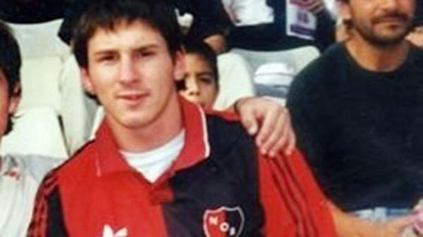

El capitan de la selección no descarta un posible regreso , en busca de conseguir revancha en el club que lo vio nacer
Messi sostuvo su voluntad de retirarse en la Lepra, aunque no se animó a confirmar cuándo lo hará. "Ojalá pueda jugar ahí pero no sé dónde voy a estar dentro de unos años", confesó Leo.
Cualquier equipo del planeta quisiera tenerlo. Y si bien hoy parece una locura imaginarlo con otra camiseta que no sea la de Barcelona, Lionel Messi mantiene en pie la ilusión de los hinchas de Newell's de verlo jugar algunos partidos en la Lepra, el club que lo vio nacer futbolísticamente. Al respecto, Leo no quiere ponerse plazos para su regreso a Argentina pero sí sueña con hacerlo.

Siempre dice que me queda pendiente jugar en Newel's y que es mi sueño pendiente pero, como decía recién, no sé qué va a pasar de acá a unos años o cómo voy a estar para volver", expresó en diálogo con TyC Sports. Y agregó: "Me encantaría y siempre lo dije pero ojalá que pueda seguir en este nivel para volver bien a Newell's porque es lo que soñé desde chiquito".
El equipo para mi, está en buenas condiciones, como todos los demás equipos siempre abra tropezones, ganas de abandonar, partidos perdidos, empatados,etc. Empezaron a sumar más jugadores, refuerzos,también dan la oportunidad a los jóvenes a debutar en primera. Además pienso que este equipo obtendrá a futuro buenas noticias, con una posible incorporación del mejor jugador del mundo..